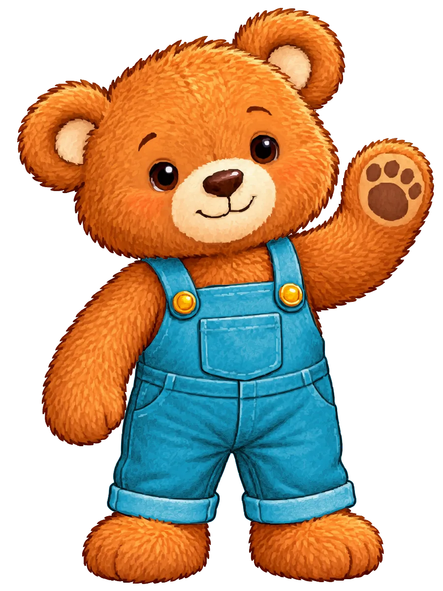

Willkommen im Wolkenpark
Kleine Geschichten.
Große Malabenteuer.
Entdecke Ausmalbücher, in denen jedes Bild die Geschichte weitererzählt.


Unser erstes Buch
Bens großer Handwerkertag
Ein Stuhl wackelt, der Wasserhahn tropft, ein Regal fehlt. Ben hilft Papa und Handwerkerin Mia, die Ferienwohnung herzurichten – und du bringst die Farbe dazu.
Ausmalbilder
Freundliche Motive mit klaren Konturen und großzügigen Flächen.
Eine zusammenhängende Geschichte
Bild für Bild geht der Handwerkertag weiter – vom Ankommen bis zum Helfer-Stern.
Für Kinder von 5 bis 8 Jahren
Zum Selbermalen, zum Vorlesen und zum gemeinsamen Entdecken.
Ein Blick ins Buch
Echte Seiten zum Durchblättern
Originalseiten aus dem Buch. Zum Vergrößern anklicken, danach mit den Pfeiltasten weiterblättern.
Die Bildergalerie
Hier hängen eure Kunstwerke.
Jede Farbe ist richtig. Hier zeigen wir ausgemalte Seiten aus den Wolkenpark-Büchern – eingesendet von Kindern, die sie selbst bunt gemacht haben.

Die Galerie wartet auf das erste Bild.
Noch hängt hier nichts. Wenn du eine Seite aus deinem Buch ausmalst, könnte dein Bild das erste sein.
So sendest du dein Bild einMitmachen
So kommt dein Bild in die Galerie
Wir schauen uns jedes Bild in Ruhe an, bevor es in der Galerie hängt.
Seite fotografieren
Leg die ausgemalte Seite flach hin und fotografiere den ganzen Bildrahmen.
Von deinen Eltern einsenden lassen
Erwachsene schicken das Foto an bilder@wolkenpark.de.
Nach unserer Prüfung in der Galerie entdecken
Wir schauen uns jedes Bild an. Danach hängt es in der Bildergalerie.

Über Wolkenpark
Angefangen hat alles in einer Ferienwohnung.
Das erste Buch entstand, damit Pauls Sohn während eines Handwerkertermins in einer Ferienwohnung eine schöne Beschäftigung hatte. Aus der Begeisterung dafür entstand die Idee, die Geschichten auch anderen Kindern zugänglich zu machen.
Mehr über Wolkenpark